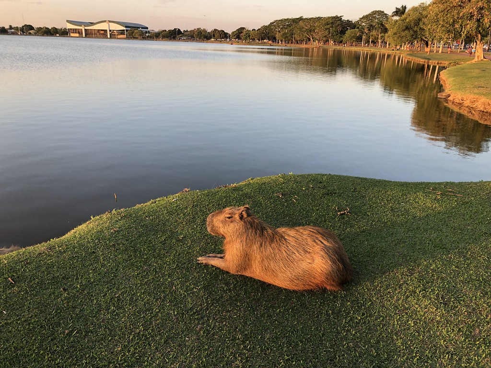

A Lagoa Maior é o principal cartão-postal de Três Lagoas e um dos locais mais frequentados por moradores e visitantes. Localizada na região central da cidade, ela se destaca pela beleza natural e pela estrutura que oferece para lazer e convivência. Ao redor da lagoa há uma pista de caminhada bastante utilizada para atividades físicas como corridas, caminhadas e passeios de bicicleta. O espaço também conta com áreas de descanso, bancos, quiosques e iluminação adequada, tornando o ambiente seguro e agradável em diferentes horários do dia. Além disso, é comum ver famílias, grupos de amigos e pessoas praticando esportes ou simplesmente apreciando a paisagem. A Lagoa Maior também abriga diversas espécies de aves, o que contribui para um cenário tranquilo e em contato com a natureza. Esse aspecto faz com que o local seja ideal para quem busca momentos de relaxamento sem sair da cidade. Um dos momentos mais especiais para visitar a lagoa é no fim da tarde, quando o pôr do sol reflete nas águas e cria uma vista encantadora. À noite, a iluminação ao redor transforma o espaço em um ponto de encontro bastante movimentado.
